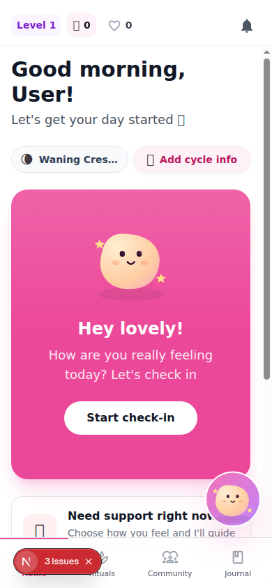
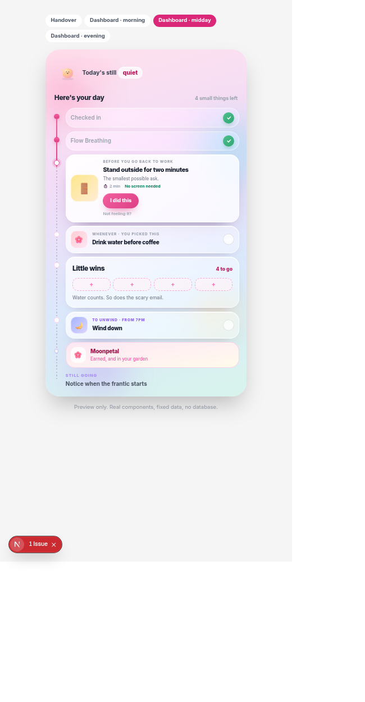
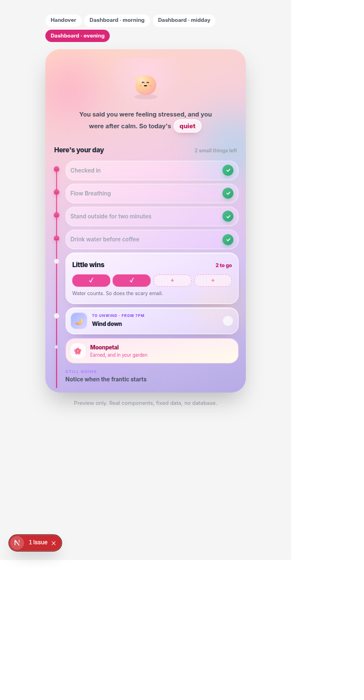
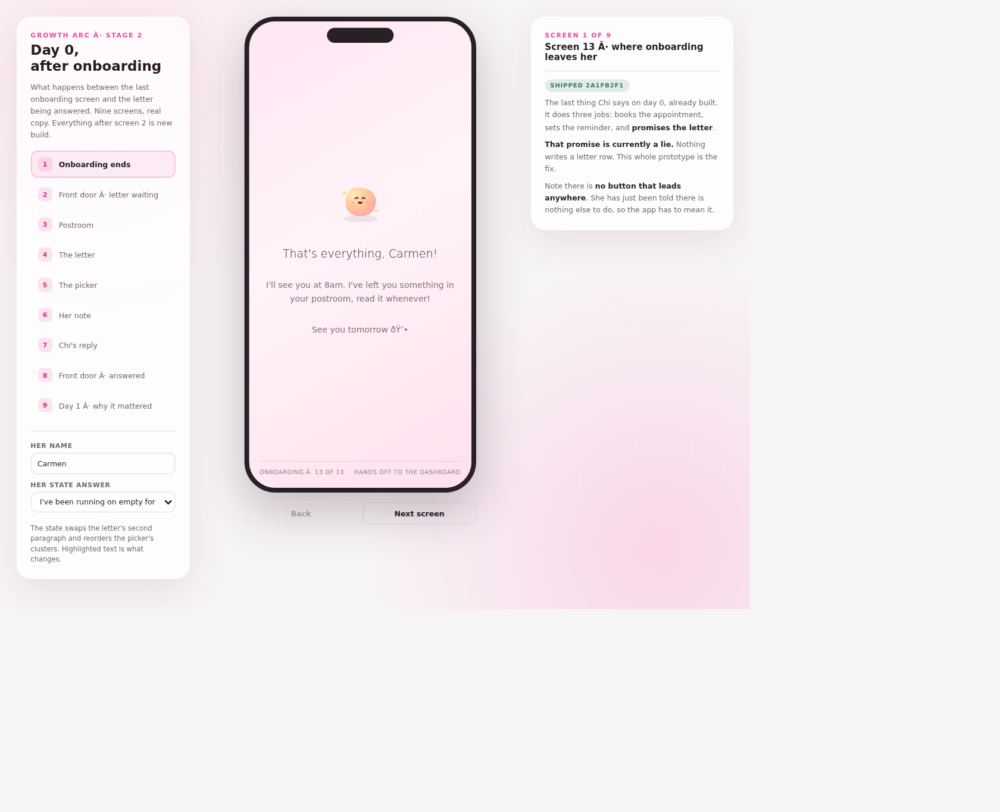

Founder & Product Designer. Research, interaction design and product voice.
Focus
RetentionService designUX writing
Status
Shipped · measuring the next cohort
The problem
People were completing a first check-in in HerFreedom101, a gamified wellness app for burned-out women. Of every real user who completed one, none returned for a second day. The obvious fix was better reminders. The evidence pointed somewhere else.
The process
I separated the investigation into two questions: was the invitation to return arriving, and was there anything worth returning to? Notification logs explained part of the silence, while community research exposed the deeper issue: willpower is not a sustainable reason for this audience to reopen a wellness app.
THE QUESTION THAT CHANGED THE BRIEF
What if the reason she isn't coming back has nothing to do with reminders at all?
The solution
I redesigned the day-two experience around recognition: a front door that remembers her, a sign-off that creates forward pull, and momentum language that celebrates progress rather than threatening loss.
01
Recognise
A returning dashboard, not another cold start.
02
Pull forward
A reason to wonder what tomorrow holds.
03
Build pride
Momentum without guilt or threat.
The outcome
The redesign is live. It is too early to claim a retention win, so success is now defined by the metric that matters: whether day-two open rate moves off zero. The immediate outcome was a clearer product hypothesis and a measurement plan that cannot hide behind day-one activity.
A retention problem that looked like a notifications problem turned out to be a recognition problem - and the fix was making the product remember her, not remind her harder.
My role
Founder & Product Designer
Methods
Community researchAnalyticsInteraction designUX writing
Constraint
A small early-user base and no formal research budget
Starting with the real leak
HerFreedom101 helps burned-out women check in, receive a matched ritual and build gentle momentum with Chi, the app's mascot. Sign-ups were happening, but repeat use was not. Every real user who had completed a first check-in had failed to return for day two.
That's not a marketing problem. That's a product giving someone nothing to come back for.
The easy diagnosis was “send more reminders.” I did not trust it without separating delivery from experience.
Separating two different questions
I traced reminder delivery through notification logs and mechanics. Most non-returners had never had a working reminder channel enabled. That explained their silence, but it did not prove notifications were the whole problem - or tell me whether returning was worthwhile.
QUESTION 01Is the invitation arriving?
Check delivery mechanics and rule out a technical explanation.
→
QUESTION 02Is there anything worth returning to?
Inspect the actual day-two experience and the audience's motivations.
KEY MOVE
I refused to let a plausible, measurable technical explanation stand in for the harder, unverified UX one.
Listening where people were already honest
There was no research panel or large support inbox, and surveying an audience already avoiding anything that feels like another task would distort the signal. I studied conversations in communities around self-care, burnout and alternatives to habit apps, then posted transparently where people were already asking for recommendations.
The people who joined were the same psychographic expressing the same need, now inside the product where I could compare what they said with what they did.
Burned-out women do not stop using wellness apps because the app is bad. They stop because willpower was never a sustainable reason to open it.
Finding a product that forgot her
A returning user's dashboard followed the same code path as a stranger's first visit. There was no acknowledgment she had been there, no callback to what she had built, and no hint that tomorrow would differ from today.

The original dashboard made a product for overwhelmed women feel like another menu to work through.
AFTERTomorrow is teasedA day shaped around herProgress is recognised
From isolated features to an adaptive day
The check-in stopped being a questionnaire that ended in a recommendation. Its answers became a handover into the rest of the experience - translating how she felt into a manageable shape for the day ahead.
The handover makes the connection between what she shared and what the product changes for her.
A day that changes with her
Morning, midday and evening are not three disconnected dashboards. They are states of the same day. Completed moments accumulate, the interface changes its emphasis, and the next useful action stays small enough to approach.
Morning · establish the day

Midday · recognise progress

Evening · close gently
Progress without punishment
The streak system had spoken in loss language. I replaced that threat with evidence of participation: completing the day earns a lasting flower, while missed calendar days do not create visible holes or failures.
LOSS LANGUAGE
Don't lose your streak. Check in today.
→
MOMENTUM LANGUAGE
You made a moment for yourself. It stays with you.
A product that remembers
The day-zero letter creates forward pull from onboarding. Instead of merely collecting information, the experience establishes something personal that can be returned to the user later.

I also created a voice system for Chi. The core rule: Chi can undercut herself, but never the user's competence.
Growth over time
Chapters turn isolated daily participation into a longer story: accumulated days, patterns noticed and a clearer sense of what the experience is becoming. This is the destination of the redesigned system - not an endless dashboard loop.
Scroll inside the phone to exploreChapters give daily participation a longer-term shape without turning missed days into failure.
Outcome
The redesign shipped and is live. I am deliberately not calling it a win based on a thin cohort or vanity metric. The next step is to let real users live through the new day-two experience and measure whether return opens move off zero.
WHAT CHANGED NOW
The product hypothesis moved from “remind her harder” to “show her the product remembers,” and success moved from day-one completion to day-two return.
Reflection
The tempting fix was always going to be the one I could prove with a dashboard. The real fix was sitting in a screen nobody had looked at from a returning user's point of view.
The next step is simple: watch the next cohort, see whether day-two open rate moves, and let that evidence - not my confidence in the redesign - decide what happens next.